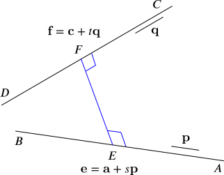
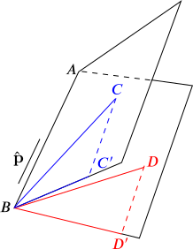
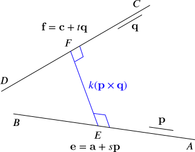

The position vectors of four points A, B, C, D relative to an origin O are given below. The vectors i, j, k are mutually perpendicular unit vectors.
A:B:C:D:2i+3j+k,2i+3j−k,2i+3i+k,2i+3j.+k
Find
the equation (in any form) of the line AB,
We can write the position vectors A to D in column form as a=231, b=11−1, c=101 and d=030.
Writing vectors in column form rather than i, j, k form for the calculations we are going to be doing reduces the likelihood of us mixing up the components of our vectors when we combine them.
A direction vector of the line AB is
AB−→=b−a=11−1−231=−1−2−2.
To avoid so many minus signs, we will use the direction vector p=−AB−→=122 instead.
Any point on the line AB has position vector r=a+sp for some real value of s. Hence an equation of the line AB is r=231+s122, where s is any real number.
the shortest distance between AB and CD,
Using the same method as above, we let q=−CD−→−=−(d−c)=1−31 (again, aiming to have fewer minus signs). Then an equation of the line CD is r=c+tq=101+t1−31, where t is any real number.
Why have we used t here and not s again? On the other hand, we have used r again; is this a problem?
Let’s suppose E is on AB and F is on CD with EF having the shortest distance between AB and CD. To help us understand this part, we’ll draw a quick sketch of the situation.

Figure 1
(Note that we have sketched E as lying between A and B, but this may or may not be the case, and similarly with F. It makes no difference to the arguments we will use.)
Because EF has the shortest distance between the two lines, it must be perpendicular to both of them. (Otherwise, if we fix E, we can make EF shorter by moving F until EF is perpendicular to CD, and likewise with moving E.)
There are at least two very different ways to proceed at this point. We could either use scalar (dot) products or vector (cross) products. We will use scalar products here, and then we will show how the rest of this question could be answered in an alternative way using vector products.
Now we can write the position vectors of E and F as e=2+s3+2s1+2s, f=1+t−3t1+t for some values of s and t. This gives
Since EF−→ is perpendicular to both AB and CD, we can obtain two equations by noting that the scalar product of EF−→ with both direction vectors p and q is zero:
The magnitude of EF−→ is therefore (−4445)2+(−1190)2+(1118)2⎯⎯⎯⎯⎯⎯⎯⎯⎯⎯⎯⎯⎯⎯⎯⎯⎯⎯⎯⎯⎯⎯⎯⎯⎯⎯⎯⎯⎯⎯⎯⎯⎯⎯⎯⎯⎯⎯⎯⎯⎯⎯⎯⎯⎯⎯⎯⎯⎯⎯⎯⎯√=119082+12+52⎯⎯⎯⎯⎯⎯⎯⎯⎯⎯⎯⎯⎯⎯⎯⎯⎯⎯⎯⎯√=1110⎯⎯⎯⎯√30, and this is the distance between the lines AB and CD.
the equation (in any form) of the plane ABC,
We’ll aim for the Cartesian equation of the plane ABC in the form px+qy+rx+u=0.
We do this with an eye on the last part of the question. The angle between two planes is the angle between the normals to each plane, and the normal to a plane is easily found from its Cartesian equation.
The point a=231 is on the plane, so 2p+3q+r+u=0(1).
The point b=11−1 is on the plane, so p+q−r+u=0(2).
The point c=101 is on the plane, so p+r+u=0(3).
We can eliminate the u terms by subtracting pairs of equations:
(1)−(2)⟹(2)−(3)⟹p+2q+2r=0p+2q−2r=0
Adding these then gives p+3q=0, so p=−3q, r=12q and hence u=52q.
Thus the equation of the plane ABC is −3qx+qy+12qz+52q=0, or −6x+2y+z+5=0 (dividing by 12q; we can multiply or divide a Cartesian equation of the plane by any non-zero constant we wish without changing the plane represented).
the angle between the planes ABC and ABD.
Using a similar method to that above, we can find the equation of the plane ABD.
Once again, we’ll aim for the Cartesian equation of the plane in the form px+qy+rx+u=0.
The point a=231 is on the plane, so 2p+3q+r+u=0(1).
The point b=11−1 is on the plane, so p+q−r+u=0(2).
The point d=030 is on the plane, so 3q+u=0(3).
Again, we can eliminate u by subtracting pairs of equations (we can always do this with this type of system of equations):
(1)−(2)⟹(1)−(3)⟹2p+2q+2r=02p+2q+2r=0
Thus r=−2p, q=32p and hence u=−92p.
Thus the equation of the plane ABD is px+32py−2pz−92p=0 or 2x+3y−4z−9=0.
Hence a normal to the plane ABC is −621, while a normal to the plane ABD is 23−4.
To find the angle between these two vectors, we use the scalar product. We have −621⋅23−4=−12+6−4=−10.
We also have ||||||−621||||||=36+4+1⎯⎯⎯⎯⎯⎯⎯⎯⎯⎯⎯⎯⎯⎯⎯⎯⎯√, while ||||||23−4||||||=4+9+16⎯⎯⎯⎯⎯⎯⎯⎯⎯⎯⎯⎯⎯⎯⎯⎯⎯√.
Thus cosθ=−1041⎯⎯⎯⎯√29⎯⎯⎯⎯√=−0.2900…, so the angle between the normals is θ=106.9∘ (to 1 d.p.). The angle between the planes is equal to the angle between the normals, so the (obtuse) angle between the planes is 106.9∘. If we wish to give the acute angle between the planes instead, this is then 180∘−106.9∘=73.1∘ (to 1 d.p.).
If we draw a sketch of the situation, we may see another possible way of thinking about the angle between these two planes. Though this is less straightforward than the above approach, especially after having done part (iii), it is perhaps more informative. It is also interesting in that it does not require us to work out the equations of the planes.

The two planes ABC and ABD meet along the line AB. We have also drawn the unit vector p̂ (in the direction of BA−→), which is p/|p|=13p=13122.
The angle between the planes is the angle between any two vectors BC′−→− and BD′−→− which lie in the planes ABC and ABD respectively, and which are both perpendicular to AB. As shown in the sketch, we can choose C′ and D′ so that BC′−→− is the component of BC−→− perpendicular to BA−→, and likewise for BD′−→−. We can work out C′C−→−: it is the component of BC−→− parallel to p̂ , so
Then the angle θ between BC′−→− and BD′−→− is found using the scalar product. For simplicity, we may as well use 9BC′−→− and 9BD′−→−, as this does not change the angle. We have
and hence cosθ=−90341⎯⎯⎯⎯√.329⎯⎯⎯⎯√=−1041⎯⎯⎯⎯√29⎯⎯⎯⎯√ as before.
We can answer parts (ii)–(iv) in a different way using the vector product.
the shortest distance between AB and CD,
For part (ii), starting from Figure 1 in (ii) above, we see that the vector EF−→ is perpendicular to both p and q, so it must be parallel to p×q. We can therefore redraw this figure as follows:

Thus to find the length of EF, we can take the scalar product of EF−→ with p×q:
EF−→⋅(p×q)=k(p×q)⋅(p×q)=k|p×q|2
so that
|EF−→|=|k(p×q)|=|EF−→⋅(p×q)||p×q|
(where we need the absolute value signs in the numerator because k might be negative).
The points A, B and C lie in this plane, so the vectors AB−→ and AC−→− lie within the plane. Hence a normal n to the plane can be found by computing AB−→×AC−→−:
The equation of the plane is then r⋅n=c for some constant c; by substituting in r=a, for example, we can deduce c=a⋅n=−5, and hence the plane ABC has equation r⋅n=−5.
the angle between the planes ABC and ABD.
We can likewise find a normal n′ to the plane ABD: